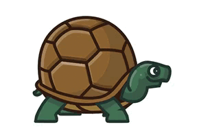

GALÁPAGOS
Arroz Marinero
Tal y como su propio nombre indica, el principal ingrediente es el arroz, al cual se le añaden camarones, conchas, calamares, mejillones… en definitiva, todo tipo de mariscos y pescados. También suele llevar ajo, cebolla, pimiento, un toque de cilantro y especias variadas.
Bacalao con papas
Este plato tan tradicional de las islas Galápagos son simples: bacalao y patatas. Aparte de eso, se le añade un sofrito a base de pimientos, tomate, ajo, cebolleta… Es un guiso con una gran historia a sus espaldas, si bien hay quienes le añaden ingredientes adicionales tales como arroz.
Ceviche de canchalagua
La textura de la canchalagua es dura, similar a la del pulpo, pero su sabor es parecido al de las almejas o conchas. Para la elaboración de este plato, se emplean tomates, pimientos y cebolla también, así como jugo de limón para potenciar su sabor.
Ceviche de canchalagua
La textura de la canchalagua es dura, similar a la del pulpo, pero su sabor es parecido al de las almejas o conchas. Para la elaboración de este plato, se emplean tomates, pimientos y cebolla también, así como jugo de limón para potenciar su sabor.

El Garrapatero
El Garrapatero se encuentra en la costa sureste de la Isla Santa Cruz, en las Islas Galápagos. Se puede ingresar a este sector tanto por vía terrestre como por vía marítima. A más de ser utilizado como un lugar de visita para los turistas que llegan a Galápagos, es también usado por la comunidad como un sitio para realizar actividades de esparcimiento. Se puede observar una gran cantidad de especies de aves, entre las que destacan los pinzones de Darwin y flamencos.
Centro de Crianza Fausto Llerena
El Centro de Crianza Fausto Llerena fue creado en el año 1965. Con el objeto de cumplir con el programa de crianza en cautiverio, aquí se encuentran tortugas de las especies presentes en las islas Santa Cruz, Santiago, Española, Pinzón y Pinta. Además, se localiza el sendero La Ruta de la Tortuga en donde existe un espacio de exhibición del emblemático Solitario George.
Tortuga Bay
Bahía Tortuga es una hermosa playa de arena blanca, ubicada en la isla Santa Cruz, provincia de Galápagos. Lleva ese nombre por ser un sitio de anidación de tortugas marinas. Existe vegetación de la parte baja de la zona de transición, de la zona seca y de la zona costera. Es un sitio ideal para realizar surf y practicar snorkel.
LAGUNA LAS NINFAS
Esta laguna se encuentra en el cantón Santa Cruz, provincia de Galápagos, rodeada de un bosque de manglar y el agrietamiento del manto de lava que da lugar a un barranco de más de 15 m de alto. Aquí se observa vegetación típica de la zona árida. Su nombre hace referencia a que en esta laguna antiguamente acudían a bañarse algunas mujeres desnudas, por lo que los hombres de aquella época le pusieron el nombre de Laguna de las Ninfas. Una visita a este sitio puede transmitir la paz necesaria para contemplar su paisaje.
VOLCÁN SIERRA NEGRA
Es considerado como el más antiguo de los volcanes de la isla. Su caldera tiene 10 km de diámetro y es la segunda caldera activa más grande del mundo, se ubica en el cantón Isabela, provincia de Galápagos. Durante la época de lluvia en el volcán se presenta una intensa neblina, la misma que reduce la observación del paisaje en la mayoría del sendero; en época seca se disfruta de su espectacular paisaje. Es uno de los mejores sitios para realizar interpretaciones geológicas.
LAS TINTORERAS
El islote Las Tintoreras se encuentra ubicado al sur de Puerto Villamil, cantón Isabela provincia Galápagos. Tiene una pequeña bahía de aguas completamente tranquilas de color turquesa, donde se pueden apreciar lobos marinos, tortugas marinas, iguanas marinas. Dicha bahía está conectada a una grieta de aguas cristalinas de poca profundidad donde se puede ver cómo nadan las tintoreras. Existe una grieta de agua en donde se observa ocasionalmente el tiburón punta blanca (Triaenodon obesus) llamado tintorera, que llega al sitio a descansar. La mayor parte del sendero es de lava de tipo AA, a excepción de dos playas de arena blanca y una de piedras negras.
LA RATONERA
La Ratonera, ubicada en Santa Cruz, Galápagos, está localizada junto a la Estación Científica Charles Darwin, cuenta con una playa de arena blanca. Es un lugar perfecto para observar la puesta de sol sobre Academy Bay. A pesar de los afloramientos rocosos, este es un lugar favorito para los surfistas.
LOS GEMELOS
Los Gemelos son una formación geológica ubicada en el cantón Santa Cruz, Galápagos, formadas por hundimientos de origen volcánico, cuando las islas estaban aún activas. Es el único lugar de la isla rodeado de un bosque nativo de escalecias. Aquí habitan varias especies de aves terrestres entre las cuales está el pájaro brujo.
PLAYA DE LA ESTACIÓN
La Playa de la Estación, ubicada en Santa Cruz, Galápagos, está localizada en el camino a la Estación Científica Charles Darwin, es una encantadora playa rodeada de un sitio de descanso donde se puede disfrutar de realizar actividades como snorkel y natación, además de tomar el sol y observar la flora y fauna del lugar.
Tradiciones de Galápagos